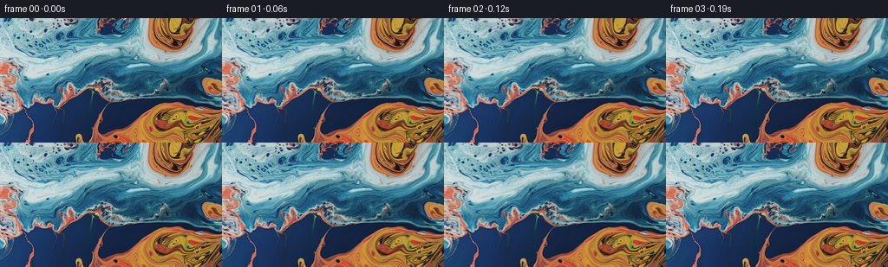
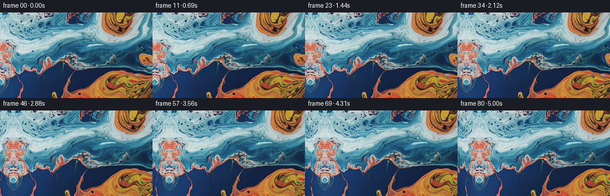
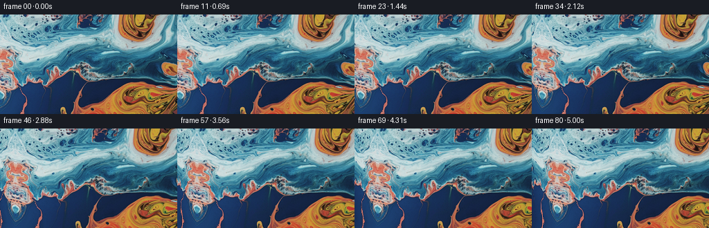

← 本轮 smoke 总览traex/GPT-5.6-Sol · 0001_s4
vision-agent · 256×144 · 16.0 FPS · 81 帧 · 状态 complete · 输出 tokens 10130
原始任务a close up of a blue and orange liquid, camera pans left
当前保存结果
已保存候选与代码修改
这里按时间展示外部捕获的候选，每份均可单独播放。保存新版本不等于完成视觉检查；下方工具证据记录实际看过的图。
候选 01 · 2026-11-09T00:12:29.485792+00:00 · 点开播放与检查图
inspection.png

transition_check.png
代码变化
--- 上一保存版本
+++ 本次保存版本
@@ -0,0 +1,82 @@
+"""Generate a smooth leftward camera pan across the supplied liquid artwork.
+
+The only newly exposed area is at the left edge. It is filled by a
+seam-continuous, gently warped reflection of the source edge; for this
+abstract marbled subject this reads as a natural continuation of the fluid
+filaments without introducing unrelated objects or a hard repeating seam.
+"""
+
+from pathlib import Path
+
+import numpy as np
+from PIL import Image
+from scipy.ndimage import map_coordinates
+
+import artifact_io
+
+
+def render(source: np.ndarray, count: int = 81) -> np.ndarray:
+ height, width, _ = source.shape
+ yy, xx = np.mgrid[0:height, 0:width].astype(np.float64)
+ source_f = source.astype(np.float64)
+ frames = np.empty((count, height, width, 3), dtype=np.uint8)
+
+ # The displacement is large enough to make the requested pan unmistakable
+ # but slow enough to retain fine marbling detail at 16 fps.
+ total_pan = 36.0
+
+ for index in range(count):
+ if index == 0:
+ # Preserve the I2V conditioning frame exactly, including every
+ # channel value (rather than passing it through interpolation).
+ frames[index] = source
+ continue
+
+ u = index / (count - 1)
+ # Nearly constant operator pan, with a soft velocity at both ends.
+ progress = u - 0.06 * np.sin(2.0 * np.pi * u)
+ shift = total_pan * progress
+
+ world_x = xx - shift
+ exposed = world_x < 0.0
+ distance = np.maximum(-world_x, 0.0)
+
+ # Existing image content translates rigidly right, as expected when
+ # the camera points progressively farther left. For negative world
+ # coordinates, reflect the edge and gradually bend it so the reveal
+ # looks like continuing poured paint rather than a literal mirror.
+ sample_x = np.where(
+ exposed,
+ distance + 0.027 * distance * distance,
+ world_x,
+ )
+ bend = distance / total_pan
+ sample_y = yy + exposed * bend * (
+ 2.15 * np.sin(yy * 0.064 + distance * 0.105)
+ + 1.05 * np.sin(yy * 0.151 - distance * 0.057 + 0.8)
+ )
+
+ rendered = np.empty_like(source_f)
+ coords = np.array([sample_y, sample_x])
+ for channel in range(3):
+ rendered[..., channel] = map_coordinates(
+ source_f[..., channel],
+ coords,
+ order=3,
+ mode="reflect",
+ prefilter=True,
+ )
+ frames[index] = np.clip(np.rint(rendered), 0, 255).astype(np.uint8)
+
+ return frames
+
+
+def main() -> None:
+ case_dir = Path(__file__).resolve().parent
+ source = np.asarray(Image.open(case_dir / "first_frame.png").convert("RGB"))
+ frames = render(source)
+ artifact_io.save(frames, case_dir)
+
+
+if __name__ == "__main__":
+ main()
候选 02 · 2026-11-09T00:14:06.183436+00:00 · 点开播放与检查图
inspection.png

transition_check.png

代码变化
--- 上一保存版本
+++ 本次保存版本
@@ -47,13 +47,17 @@
# looks like continuing poured paint rather than a literal mirror.
sample_x = np.where(
exposed,
- distance + 0.027 * distance * distance,
+ 1.18 * distance + 0.020 * distance * distance,
world_x,
)
bend = distance / total_pan
- sample_y = yy + exposed * bend * (
- 2.15 * np.sin(yy * 0.064 + distance * 0.105)
- + 1.05 * np.sin(yy * 0.151 - distance * 0.057 + 0.8)
+ sample_y = yy + exposed * (
+ 0.55 * distance
+ + bend
+ * (
+ 3.2 * np.sin(yy * 0.064 + distance * 0.105)
+ + 1.7 * np.sin(yy * 0.151 - distance * 0.057 + 0.8)
+ )
)
rendered = np.empty_like(source_f)
可观测工具行为
命令 1 · 2026-11-09T00:11:00.198186+00:00/bin/bash -lc "cat prompt.txt && printf '\\n--- GENERATION_RULES ---\\n' && cat GENERATION_RULES.md"
exit 0 命令 2 · 2026-11-09T00:11:00.454348+00:00/bin/bash -lc "find . -maxdepth 2 -type f -printf '%p\\n' | sort && printf '\\n--- binaries ---\\n' && command -v ffmpeg && command -v ffprobe && command -v python3"
exit 1 命令 3 · 2026-11-09T00:11:07.644185+00:00/bin/bash -lc "cat task_spec.json && printf '\\n--- artifact_io ---\\n' && sed -n '1,240p' artifact_io.py"
exit 0 命令 4 · 2026-11-09T00:11:08.099395+00:00/bin/bash -lc "python3 - <<'PY'
from PIL import Image
import numpy as np
im=np.array(Image.open('first_frame.png').convert('RGB'))
print(im.shape,im.dtype,im.min(),im.max(),im.mean(axis=(0,1)))
PY"exit 0 命令 5 · 2026-11-09T00:11:23.490719+00:00/bin/bash -lc "python3 - <<'PY'
from PIL import Image
import numpy as np
im=np.array(Image.open('first_frame.png').convert('RGB')).astype(float)/255
# Search strips whose local content can tile into left edge; weighted across RGB and gradients maybe
for bw in [2,4,8,12,16]:
vals=[]
for x in range(bw,256-bw):
a=im[:,x-bw:x]
b=im[:,:bw]
vals.append((((a-b)**2).mean(),x))
print(bw,sorted(vals)[:8])
PY"exit 0 命令 6 · 2026-11-09T00:11:43.370329+00:00/bin/bash -lc "python3 - <<'PY'
try:
import scipy; print('scipy',scipy.__version__)
except Exception as e: print('no scipy',e)
PY"exit 0 命令 7 · 2026-11-09T00:12:26.197240+00:00/bin/bash -lc "python3 generate.py && python3 - <<'PY'
from pathlib import Path
from PIL import Image
import numpy as np
import json
src=np.array(Image.open('first_frame.png').convert('RGB'))
frames=np.stack([np.array(Image.open(f'frames/{i:02d}.png')) for i in range(81)])
spec=json.load(open('task_spec.json'))
print('shape/dtype:',frames.shape,frames.dtype)
print('first exact:',np.array_equal(frames[0],src))
print('mean abs adjacent:',float(np.abs(np.diff(frames.astype(np.int16),axis=0)).mean()))
print('last-vs-first MAE:',float(np.abs(frames[-1].astype(np.int16)-frames[0]).mean()))
print('outputs:',[(p.name,p.stat().st_size) for p in [Path('pixels.npz'),Path('inspection.png'),Path('transition_check.png'),Path('index.html')]])
PY"exit 0 命令 8 · 2026-11-09T00:12:46.741106+00:00/bin/bash -lc "python3 - <<'PY'
try:
import cv2; print(cv2.__version__)
except Exception as e: print(e)
PY"
exit 0 命令 9 · 2026-11-09T00:12:57.805241+00:00/bin/bash -lc "python3 - <<'PY'
import cv2, numpy as np
from PIL import Image
im=np.array(Image.open('first_frame.png').convert('RGB'))
h,w,_=im.shape
p=40
# make 144 x 296 with left blank. Inpaint RGB doesn't matter.
canvas=np.zeros((h,w+p,3),np.uint8);canvas[:,p:]=im
mask=np.zeros((h,w+p),np.uint8);mask[:,:p]=255
# add border? OpenCV
for meth,name in [(cv2.INPAINT_TELEA,'telea'),(cv2.INPAINT_NS,'ns')]:
out=cv2.inpaint(canvas,mask,5,meth)
Image.fromarray(out[:,:80]).save('cand_'+name+'.png')
PY"exit 0 命令 10 · 2026-11-09T00:13:18.390037+00:00/bin/bash -lc "python3 - <<'PY'
from PIL import Image
import numpy as np
im=np.array(Image.open('first_frame.png').convert('RGB')).astype(float)/255
for bw in [1,2,4,8,12]:
vals=[]
b=im[:,:bw]
for x in range(40,256-bw):
a=im[:,x:x+bw]
vals.append((((a-b)**2).mean(),x))
print('\\n',bw,sorted(vals)[:10])
PY"exit 0 命令 11 · 2026-11-09T00:14:03.159248+00:00/bin/bash -lc "python3 generate.py && python3 - <<'PY'
from PIL import Image
import numpy as np
for p in ('cand_telea.png','cand_ns.png'):
try: __import__('pathlib').Path(p).unlink()
except FileNotFoundError: pass
src=np.array(Image.open('first_frame.png').convert('RGB'))
f=np.stack([np.array(Image.open(f'frames/{i:02d}.png')) for i in range(81)])
print(f.shape,f.dtype,'first_exact',np.array_equal(f[0],src),'adjacent_mae',np.abs(np.diff(f.astype(np.int16),axis=0)).mean())
for i in (1,20,40,80):
s=36*(i/80-0.06*np.sin(2*np.pi*i/80)); q=int(round(s))
mae=np.abs(f[i,:,q:].astype(np.int16)-src[:,:256-q].astype(np.int16)).mean()
print(i,q,round(float(mae),3))
PY"exit 0 视觉工具实际返回图片 1

视觉工具实际返回图片 2

视觉工具实际返回图片 3
视觉工具实际返回图片 4
视觉工具实际返回图片 5

保存候选 2 份；完成命令 11 次；可验证图片返回 5 张。原始 API 响应与完整日志保留在本地。